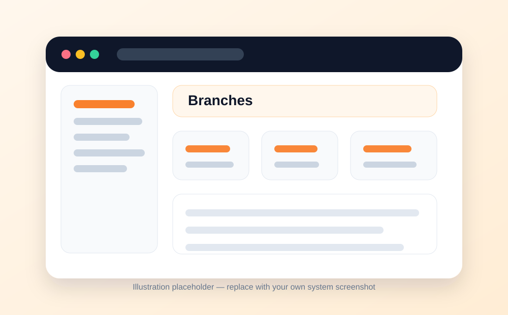
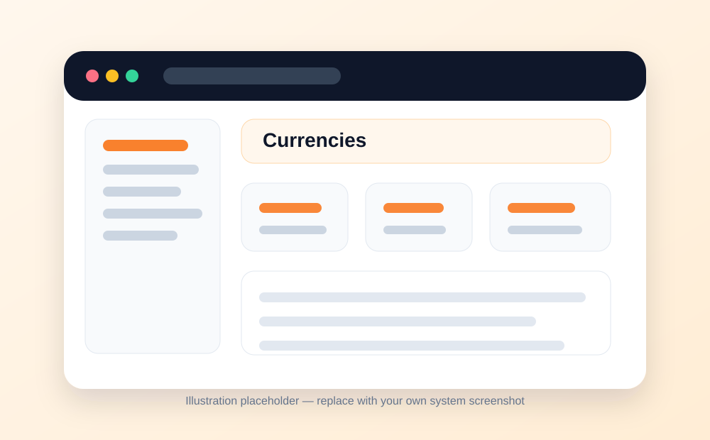
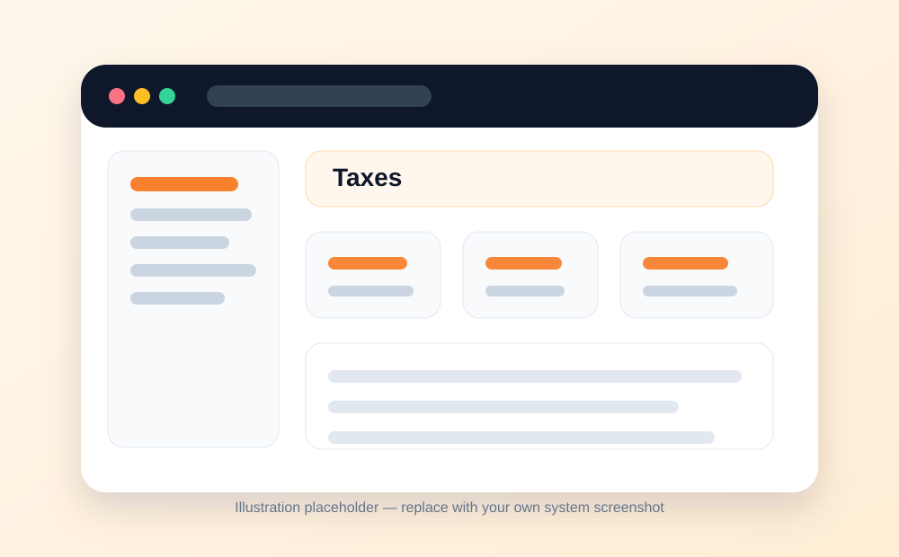
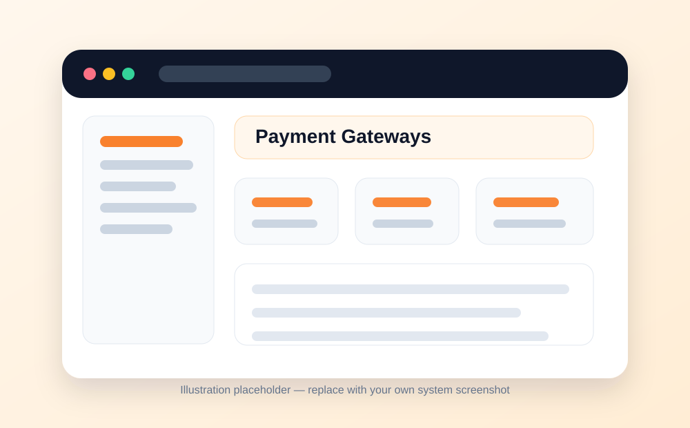
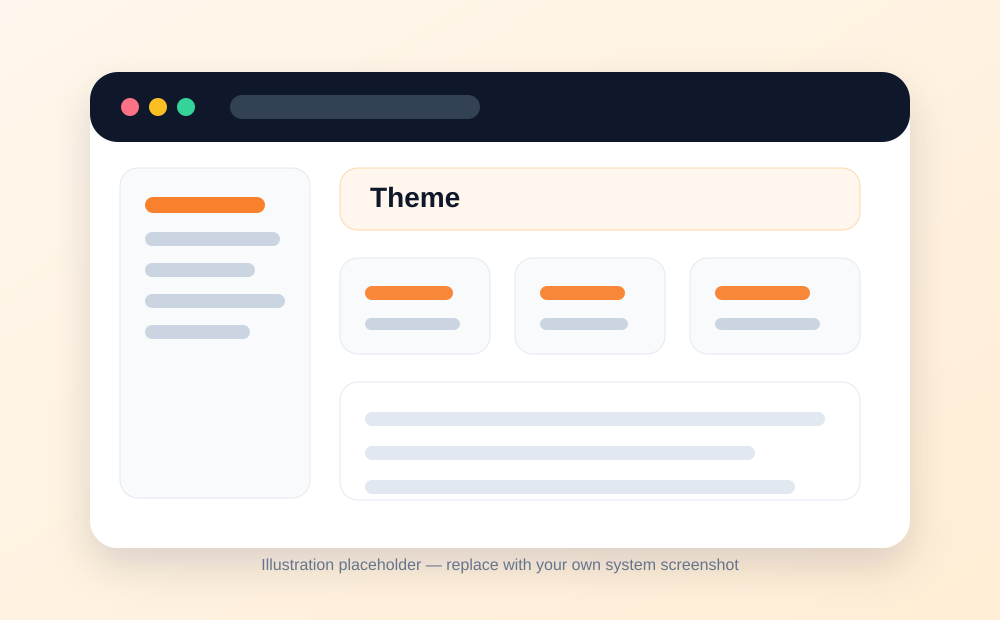
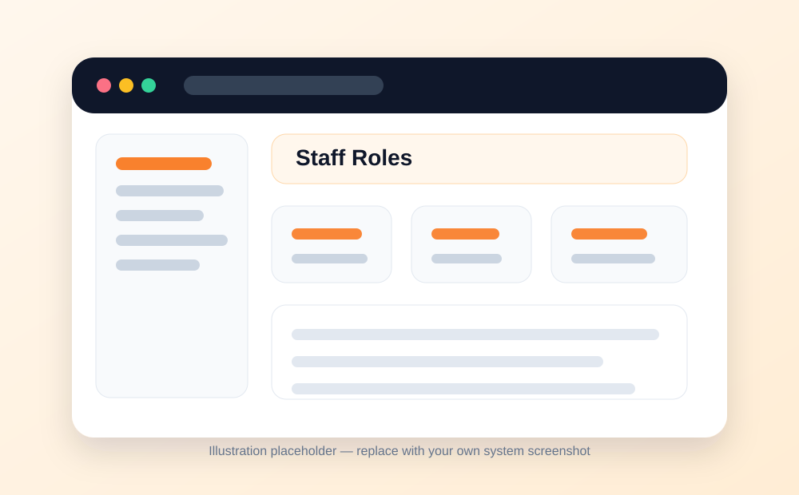
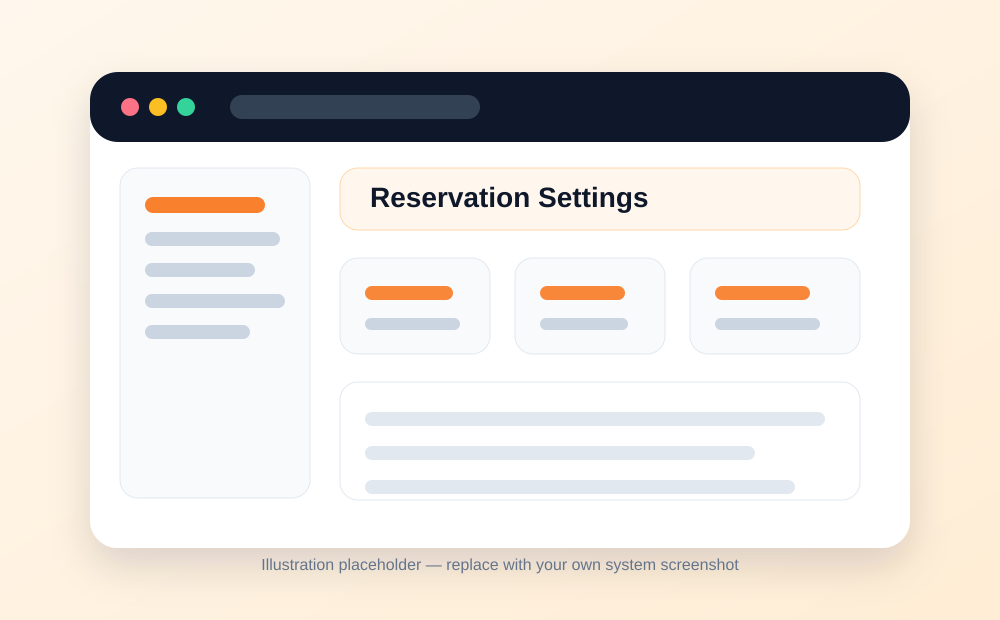

⚙️
Administration
Restaurant Settings Menu
Configure restaurant details, app settings, branches, currency, emails, taxes, payment gateways, theme, staff roles, and reservations.
What this module is for
- Settings control how the restaurant system behaves.
- This is where the restaurant profile, operational defaults, communication settings, payment options, tax rules, branding, staff permissions, and reservation settings are managed.
- Only trusted admin users should access sensitive settings.
Main settings areas
- Restaurant information: business name, phone number, and profile details.
- App settings: country, timezone, and currency.
- Branch settings: add and manage multiple branches where supported.
- Currencies: configure currencies used by the system.
- Email settings: enable or disable email notifications and related email options.
- Tax settings: create taxes that apply to orders where required.
- Payment gateways: enable the payment methods/gateways supported by the installation.
- Theme settings: upload logo and set brand colors.
- Staff roles: manage role permissions for staff users.
- Reservation settings: configure booking rules, availability, seating options, time slots, and related reservation behavior where available.
Typical workflow
- Open Settings from the sidebar.
- Select the setting area you want to configure.
- Update the required fields.
- Save changes.
- Test the affected area, for example by creating a test order, reservation, email, or payment.
Good practice
- Set the correct timezone before using reports or scheduled emails.
- Review tax settings carefully before going live.
- Do not enable payment gateways unless the credentials and callback settings are correct.
- Limit settings access to trusted users.
Screens / visual guide
The images below are clean placeholders prepared for the documentation website. Replace them with screenshots from your own installed system when you are ready.







